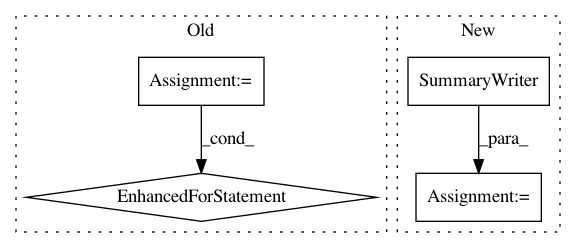

ff345c2e2210061141653a19ef1431c6866cbf68,examples/pytorch/pointcloud/pointnet/train_partseg.py,,,#,146
Before Change
best_test_miou = 0
best_test_per_cat_miou = 0
for epoch in range(args.num_epochs):
train(net, opt, scheduler, train_loader, dev)
if (epoch + 1) % 5 == 0:
print("Epoch //%d Testing" % epoch)
test_miou, test_per_cat_miou = evaluate(net, test_loader, dev, (epoch + 1) % 5 ==0)
if test_miou > best_test_miou:
best_test_miou = test_miou
best_test_per_cat_miou = test_per_cat_miou
if args.save_model_path:
torch.save(net.state_dict(), args.save_model_path)
print("Current test mIoU: %.5f (best: %.5f), per-Category mIoU: %.5f (best: %.5f)" % (
test_miou, best_test_miou, test_per_cat_miou, best_test_per_cat_miou))
After Change
import torchvision
from torch.utils.tensorboard import SummaryWriter
from torchvision import datasets, transforms
writer = SummaryWriter()
// Select 50 distinct colors for different parts
color_map = torch.tensor([
[47, 79, 79],[139, 69, 19],[112, 128, 144],[85, 107, 47],[139, 0, 0],[128, 128, 0],[72, 61, 139],[0, 128, 0],[188, 143, 143],[60, 179, 113],
[205, 133, 63],[0, 139, 139],[70, 130, 180],[205, 92, 92],[154, 205, 50],[0, 0, 139],[50, 205, 50],[250, 250, 250],[218, 165, 32],[139, 0, 139],
In pattern: SUPERPATTERN
Frequency: 3
Non-data size: 4
Instances
Project Name: dmlc/dgl
Commit Name: ff345c2e2210061141653a19ef1431c6866cbf68
Time: 2021-02-03
Author: wcy_james@outlook.com
File Name: examples/pytorch/pointcloud/pointnet/train_partseg.py
Class Name:
Method Name:
Project Name: kengz/SLM-Lab
Commit Name: c9d0af542668df6fcaa51b5298237ea4a351f101
Time: 2020-02-23
Author: kengzwl@gmail.com
File Name: slm_lab/agent/__init__.py
Class Name: Body
Method Name: log_tensorboard
Project Name: brilee/MuGo
Commit Name: b6a6ef0940efe48fba7ca76a2009ef196fd2f2fe
Time: 2016-07-06
Author: brian.kihoon.lee@gmail.com
File Name: policy.py
Class Name: PolicyNetwork
Method Name: initialize_logging